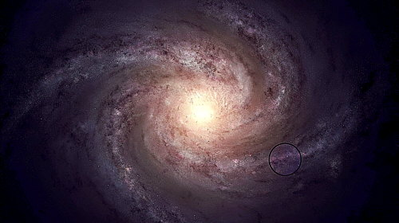
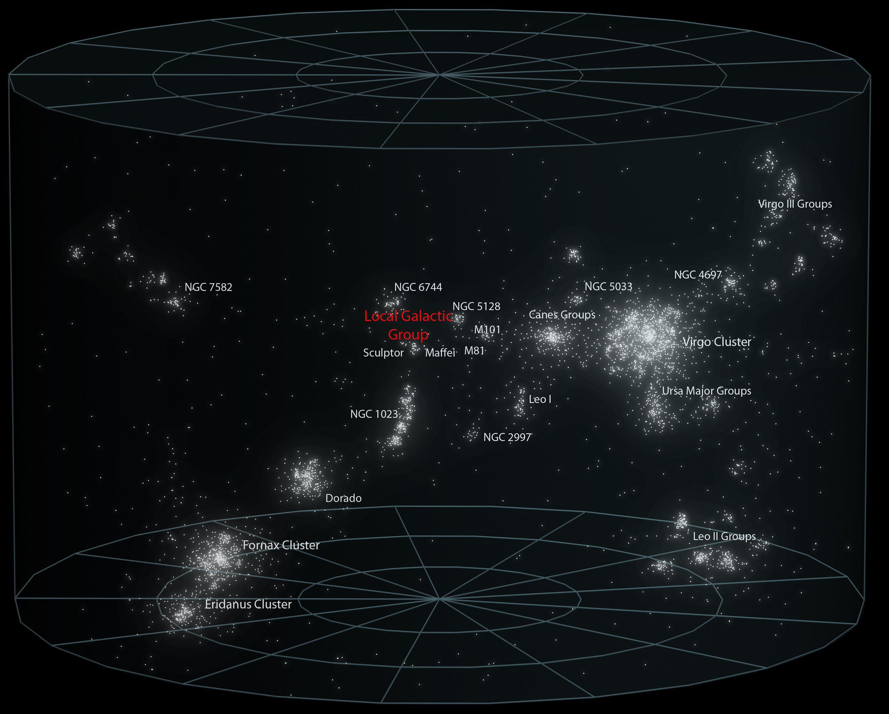

Bienvenido a "Astronomía para todos"
Esta es tu página dedicada al fascinante mundo de la astronomía. Si alguna vez te preguntaste qué hay más allá de nuestro planeta, te interesa la inmensidad del universo o si simplemente deseás saber más del cosmos, llegaste al lugar indicado.
Nuestro objetivo es acercar el conocimiento a todos, sin importar tu nivel de experiencia. Preparate para embarcarte en un viaje cósmico, donde aprenderás sobre el maravilloso campo de la Astronomía.

¿Qué es la Astronomía?
La astronomía es la ciencia que se encarga del estudio y comprensión del universo, sus componentes, estructuras y fenómenos celestes. Es una disciplina que ha sido fundamental tanto en la ciencia antigua como en la ciencia moderna, y su importancia radica en el profundo impacto que ha tenido en nuestra comprensión del mundo, del universo y de nuestro lugar en él.
Desde tiempos antiguos, la astronomía ha sido utilizada para explorar el cielo y comprender los movimientos de los astros. Civilizaciones como los egipcios, los babilonios y los mayas desarrollaron sistemas de observación y registro de los cuerpos celestes, estableciendo patrones y calendarios basados en sus movimientos. La astronomía fue esencial para la navegación, la agricultura, la astrología y el desarrollo de culturas antiguas.
En la ciencia moderna, la astronomía ha evolucionado enormemente gracias a los avances tecnológicos. Mediante el uso de telescopios, satélites y observatorios espaciales, los científicos han podido realizar descubrimientos trascendentales; han revelado la existencia de exoplanetas, agujeros negros, galaxias distantes y han estudiado la composición y evolución del universo. Además, la astronomía ha contribuido a campos científicos relacionados, como la astrofísica, la cosmología y la búsqueda de vida extraterrestre.
El estudio de las estrellas se remonta a miles de años atrás. Los primeros registros sistemáticos de observación estelar datan de la antigua Mesopotamia, alrededor del 3000 a.C. Sin embargo, la astronomía como ciencia formal y sistemática se desarrolló en la antigua Grecia, con figuras destacadas como Aristóteles, Hiparco de Nicea y Ptolomeo. A partir de entonces, el estudio de las estrellas ha sido continuo y se ha ampliado en diferentes culturas y períodos históricos.
¿Dónde nos encontramos? Nuestra ubicación en el universo
Primero, nuestro planeta, la Tierra. Se encuentra ubicada en el Sistema Solar, un sistema planetario que liga gravitacionalmente a un conjunto de cuerpos astronómicos que orbitan alrededor de una única estrella, el Sol.
El Sistema Solar se encuentra en la galaxia conocida como la Vía Láctea. Esta galaxia es una vasta estructura que se extiende a lo largo de aproximadamente 100.000 años luz, compuesta por cientos de miles de millones de estrellas, nubes de gas, polvo cósmico y sistemas planetarios.
La Vía Láctea tiene una forma espiral, con brazos espirales que se extienden desde un núcleo central, donde se encuentra un agujero negro supermasivo llamado Sagitario A*, que ejerce una fuerte influencia gravitacional sobre las estrellas y el gas circundante. Nuestro sistema solar se encuentra en uno de estos brazos espirales, conocido como el Brazo de Orión o el Brazo Local.
En la imagen, se puede ver demarcada la zona en donde se encuentra nuestro sistema solar.

Nuestros Vecinos
Nuestra Vía Lactea forma parte de un vecindario. Si "escapamos" más allá de la Vía Lactea, veremos que nuestra galaxia forma parte de un conjunto conocido como el Grupo Local, que incluye varias galaxias vecinas, como Andrómeda y la Galaxia del Triángulo.
El Grupo Local es el conjunto de las galaxias con mayor proximidad a la nuestra, conformado por todas las galaxias que se encuentran en un radio de 5 millones de años luz alrededor de la Vía Láctea.

Si nos vamos aún más lejos, vamos a ver que el Grupo Local se encuentra dentro de otra estructura: el Supercúmulo de Virgo, un supercúmulo que contiene alrededor de 100 grupos y cúmulos de galaxias, denominado así por el cúmulo de Virgo, localizado cerca de su centro.
Y todavía no termina, porque si nos alejamos aún más, el Supercúmulo de Virgo forma parte de una estructura mucho más grande: el Supercúmulo de Laniakea ("cielo inmenso" en hawaiano); un supercúmulo de galaxias que alberga aproximadamente unas 100.000 de estas, con un diámetro aproximado de 520 millones años luz o 160 megaparsecs.
Por último, el Supercúmulo de Laniakea se encuentra en el Complejo de Supercúmulos Piscis-Cetus, un complejo formado por supercúmulos de galaxias. Tiene una longitud de 1000 millones años luz aproximadamente (unos 308 megaparsec) y un ancho de 150 millones años luz.